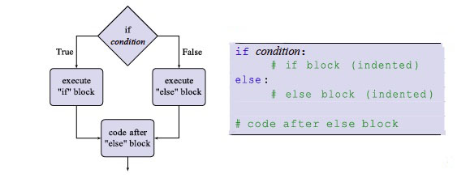
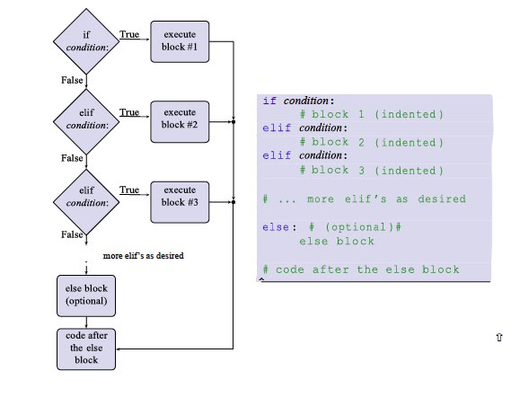

Now that we know how to ask questions about data using Boolean expressions, we can use the
values of Boolean expressions to get our programs to perform different actions under different
circumstances called branching. Branching allows us to execute one block of code if a Boolean
expression is True and a different one if it is False.
In Python, we perform branching using a conditional statement or if-statement. The syntax is the
keyword if, followed by a Boolean expression (the condition), followed by a colon, like this:
if condition:
The if-statement is then followed by a block (a series of indented lines of code — just like a function body). The block of code following the if-statement is only executed if the condition evaluates to True. Let’s look at an example:
This program draws a circle in the middle of the canvas. By default, this circle is small; we use
global variable radius to represent the circle's radius, and initially, this is set to 10. The conditional
statement is in the keyPressed() function. Recall that this is an event handler that is automatically
called whenever any key on the keyboard is pressed.
You may also recall the special variable key: Processing set this variable to hold the value of
the most recently pressed key. In this case, we use an if-statement to check if the + key was
pressed. If it was, we increase the value of radius by 5. If any other key was pressed, then the value
of the expression key == "+" is False, and so we will skip changing the value of radius and do
nothing. The result of this is that the circle on the screen gets bigger every time the + key is pressed.
So what if we wanted to make our program a little more user-friendly by adding a message that
tells the user what to do if they’re hitting the wrong key? It might be natural to try this:
However, this doesn't quite do what we want. Since the print() call is outside the ifstatement's
code block, it executes regardless of the value of the Boolean expression in
the if-statement. In other words, even if the user is doing the right thing, our program will still
present them with a message telling them what to do!
What we need is a way of specifying a second block that gets executed if the Boolean
expression in the if-statement evaluates to False. We can do this using an else-statement. An
else-statement is the word else followed by a colon. It is written after the if-statement and its block
of code:
Now, if the user hits the + key, the program will increase the circle’s radius. Otherwise, it will execute the else statement’s block of code, which prints instructions to the console. In general, the flow of execution for conditional statements looks like this:

Suppose we want to add functionality to the code, which decreases the size of the circle whenever the user presses the - key. Here’s one way we could do that:
Like most other programming languages, Python gives us a cleaner way to handle multiple conditions
intended to be mutually exclusive (i.e., when we want one branch of many to be executed). In Python,
there is an elif-statement (“elif” is short for “else if”). An elif-statement consists of the word “elif”,
followed by a Boolean expression, followed by a colon, followed by a block of statements to
execute if the Boolean expression is True. An elif-statement can appear after the block associated
with an if-statement or another elif-statement but is only executed if the preceding if-statement or
elif-statement is False.
Here’s a different way we can write our program, where we combine shrinking the circle with
condition the - key and printing out instructions if any key other than + or - is pressed:
Note that only one of the three blocks is executed. As soon as an if-statement or elif- statement
is True, its block is executed, and no more conditional statements are tested. Thus, no more
blocks can execute — even if more than one condition is True! So, when you’re using elif, be
aware that the order of the conditions can potentially impact your code differently than you
envisioned. The final else block only executes if none of the preceding conditions are True.
Multiple elif-statements and accompanying blocks are allowed as long as the first conditional
statement is an if-statement. In all cases, the else statement is optional. Once any one of the
conditional statements’ blocks executes, the program continues at the first line of code following the
else block. The following flowchart and code template describe the flow of execution in an if-elif-else
chain:

Once again, notice that only one of the blocks in the if-elif-elif-...-else chain can execute no matter how many elif-statements there are.